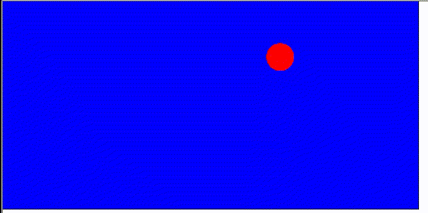

Skapa ett program där en boll studsar mot fyra väggar.
Jag har ökat hastigheten lite på bollen ovan, det är inget krav att bollen rör sig fort.
Min lösning bygger på att jag ritar en blå rektangel där bredd och höjd defineras i två variabler.
Bollens riktning i x-led och y-led behöver man också hålla reda på.
Med hjälp av if-satser kollar jag om jag nått en kant.
Min lösning är endast ett förslag, du kanske väljer en annan lösning.
Gör din kod i koda.nu och simple.js för att skapa ditt program. Din kod ska innehålla kommentarer och variabelnamn ska vara väl valda.
Programmet ska starta med en block kommentar, t ex
*/
Övningsuppgift lektion 2
Namn: Peter Carlsson (byt naturligtvis mot ditt eget namn)
*/
Kopiera sedan ditt program till ett dokument som du sparar som pdf. Sluglitgen lämnar du in pdf dokumentet här